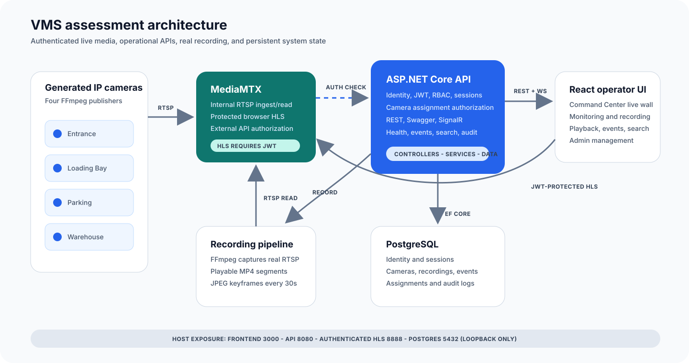

Protected HLS
MediaMTX delegates browser reads to the API. JWT validity, session revocation, role, camera state, and Viewer assignment are checked.
Step 10 closes the assessment with camera-level media authorization, interactive REST documentation, a real Command Center video wall, credential redaction, security headers, final tests, clean Docker proof, and a complete PDF-to-code checklist.
The PDF requires secure authentication and RBAC, Docker deployment, REST API documentation, responsive operator interfaces, and a README with setup instructions. The final review also confirmed that assigned-camera authorization must protect the actual media bytes, not only the camera-list API.
MediaMTX delegates browser reads to the API. JWT validity, session revocation, role, camera state, and Viewer assignment are checked.
Swagger UI and an OpenAPI JSON document describe the controller routes and JWT bearer authentication.
A final verifier checks security, real media decoding, OpenAPI, credential redaction, live-wall sources, headers, ports, and cleanup.
The only new application package. It generates OpenAPI from ASP.NET Core controllers and hosts the embedded Swagger UI.
Uses the media server's built-in HTTP authorization contract; no custom media proxy or duplicated stream server was added.
The existing JWT/session boundary validates media. HLS.js supplies the same token on every browser media request.
The browser receives operational data through the API and video through MediaMTX. MediaMTX asks the API before each HLS read. RTSP, the MediaMTX control API, and metrics are internal-only.

HLS.js adds the current JWT to the playlist and every segment request.
The external-auth payload contains the token, read action, HLS protocol, and camera path.
Signature, issuer, audience, expiry, session, account, role, camera, and Viewer assignment are checked.
A successful response releases HLS. Otherwise MediaMTX returns 401 without exposing media.
| Request | Expected | Verified |
|---|---|---|
| Anonymous - camera 1 | 401 | Yes |
| Viewer - assigned camera 1 | 200 | Yes |
| Viewer - unassigned camera 3 | 401 | Yes |
| Operator/Administrator | 200 for enabled cameras | Yes |
| Revoked session | 401 | Yes |
http://localhost:8080/swagger provides interactive route discovery and JWT authorization.
http://localhost:8080/openapi/v1.json supports tools and reviewers.
Controller request records use data annotations and automatic
[ApiController] validation. Step 10 bounds login
fields and rejects unsafe HLS path traversal variants.
Management responses redact username/password. Submitting the unchanged placeholder safely preserves the stored secret.
FFmpeg/FFprobe use ArgumentList without a shell. Media paths remain contained under the storage root.
RTSP, MediaMTX API, and metrics have no host bindings. Development ports bind to loopback.
API and Nginx add content-type, frame, referrer, permissions, and content-security protections.
authMethod: http
authHTTPAddress: http://api:8080/api/media/authorize
authHTTPExclude:
- action: publish
- action: api
- action: metricsxhrSetup: (request) => {
request.setRequestHeader(
'Authorization',
`Bearer ${accessToken}`,
)
}app.UseSwagger(options =>
options.RouteTemplate = "openapi/{documentName}.json");
app.UseSwaggerUI(options => {
options.SwaggerEndpoint(
"/openapi/v1.json",
"Video Management System API v1");
});| Minimum deliverable | Implementation | Status |
|---|---|---|
| Authentication and RBAC | Identity, JWT, sessions, policies, assignment-protected HLS | Verified |
| Camera Management | CRUD, groups, enable/disable, FFprobe, health and heartbeat | Verified |
| Multi-camera Live View | 1/4/9/16 layouts and Command Center live wall | Verified |
| Recording and Playback | Manual, continuous, event MP4; seek, speed, snapshot, download | Verified |
| Keyframe Timeline | JPEG at zero and every 30 seconds; click-to-seek | Verified |
| Central Command Center | Live wall, events, failures, alarms, storage, incidents, activity, SignalR | Verified |
| Event Management | Eight types, fields, filters, details, close action | Verified |
| Search and Filters | Cameras, recordings, events, users and required filters | Verified |
| Docker Deployment | Eight services, health checks, persistent volumes | Verified |
| REST API Documentation | Swagger UI and OpenAPI JSON | Verified |
| README setup instructions | Prerequisites, startup, accounts, verification, assumptions | Verified |
44 tests pass with zero build warnings or errors.
12 tests, ESLint, TypeScript, and production build pass.
Eight healthy containers, protected HLS, H.264, MP4/JPEG, Swagger, SignalR, and cleanup.
docker compose up --build -d
dotnet test Vms.slnx --no-restore
Push-Location frontend
npm run lint
npm test -- --run
npm run build
Pop-Location
.\scripts\verify-delivery.ps1A hidden UI link does not protect video. The media server validates identity and assignment for playlists and segments.
RTSP is internal service traffic. HLS crosses into the browser and requires the user JWT.
It is generated from controllers and models, reducing drift from the real REST surface.
The verifier creates a temporary credential camera, tests it, and removes it.